गैलीपोली का युद्ध (1915)
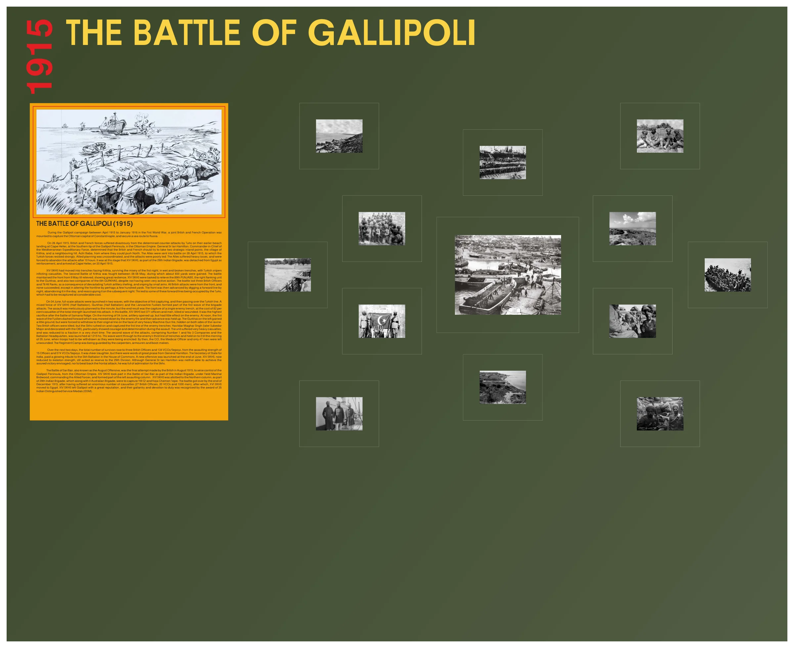
बैटल गैलरी चित्र
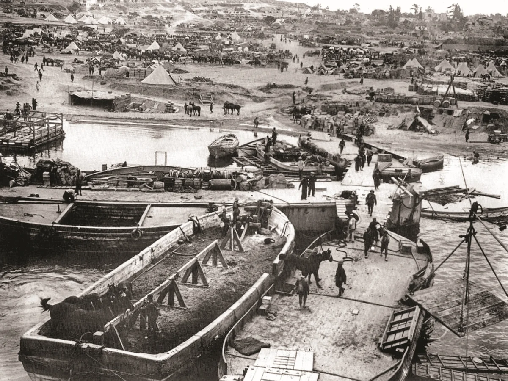
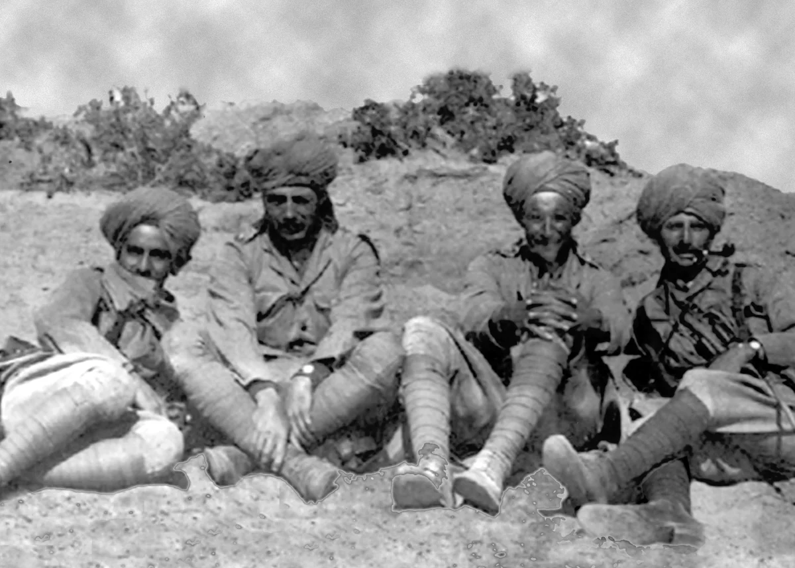
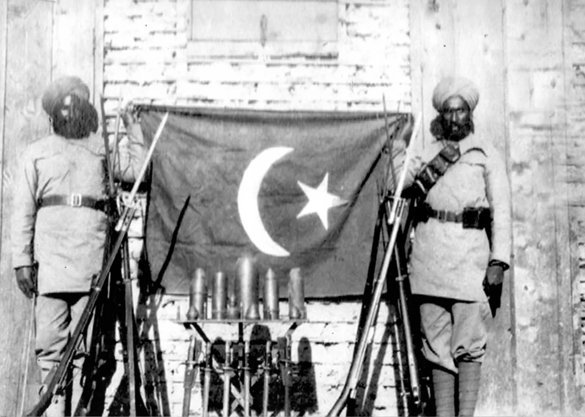
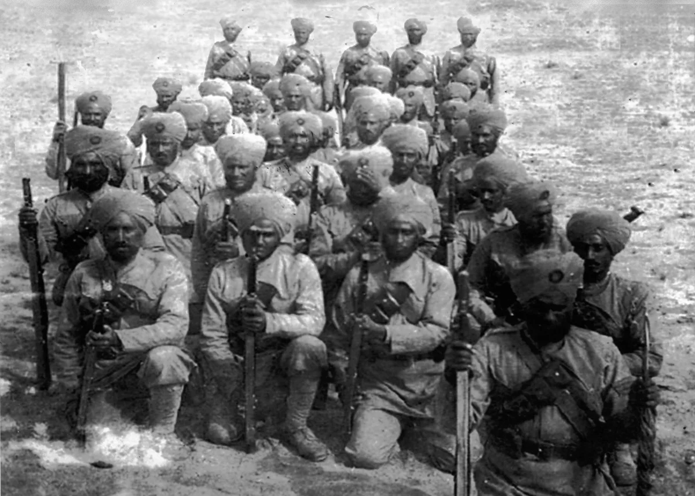
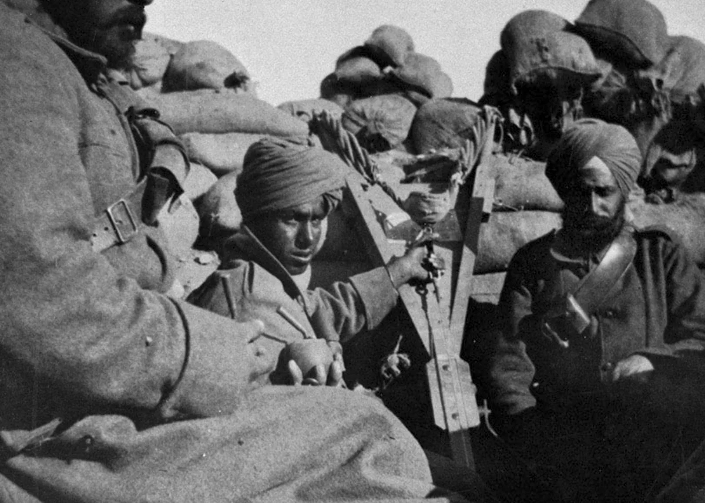
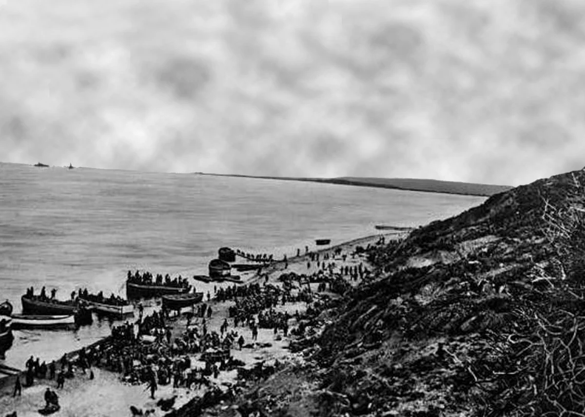
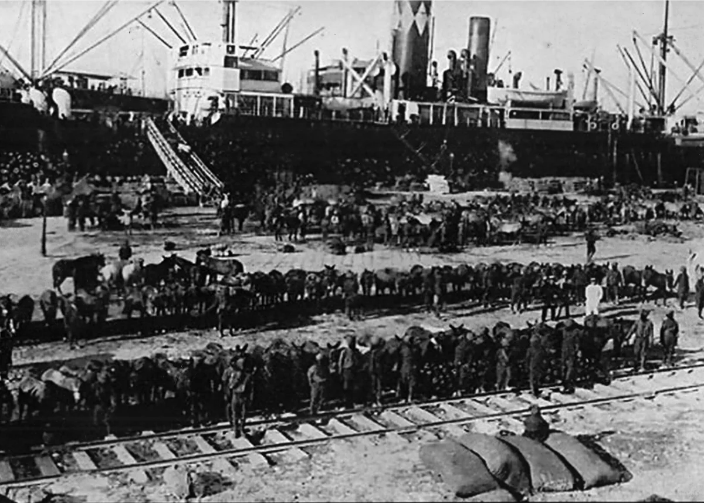
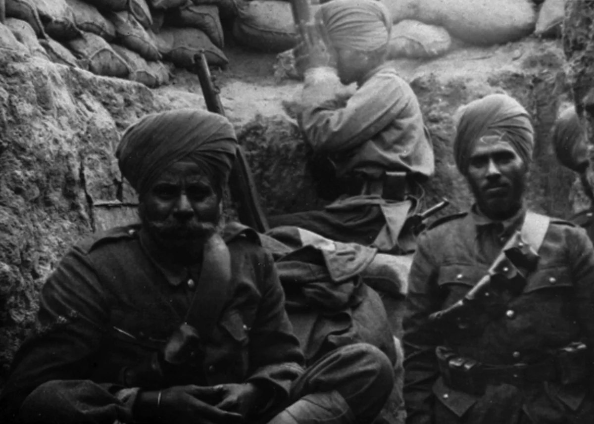
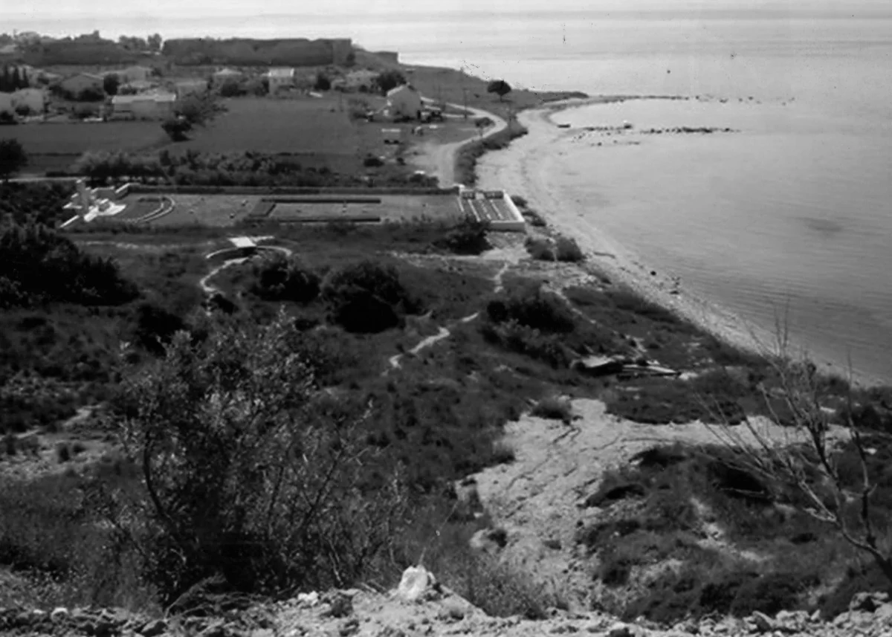
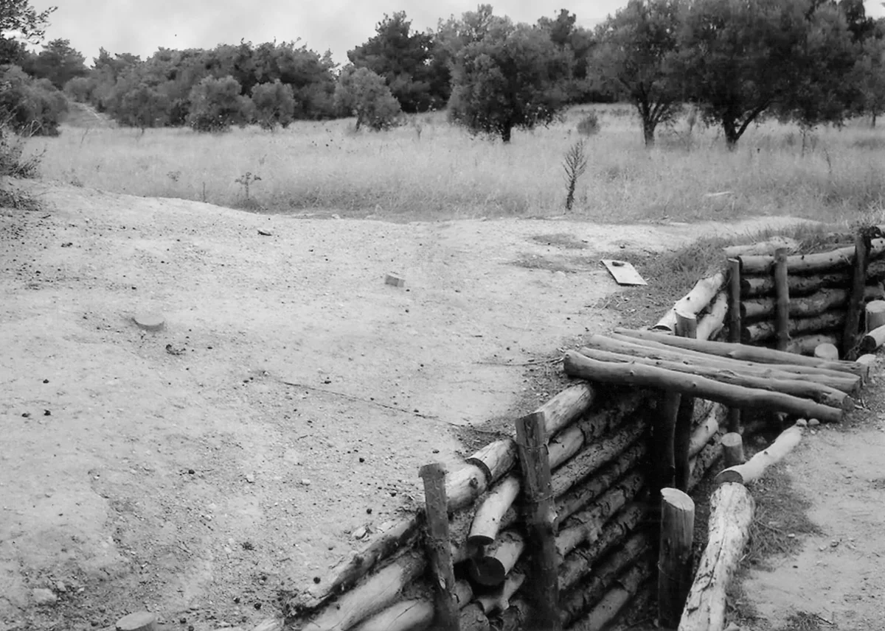
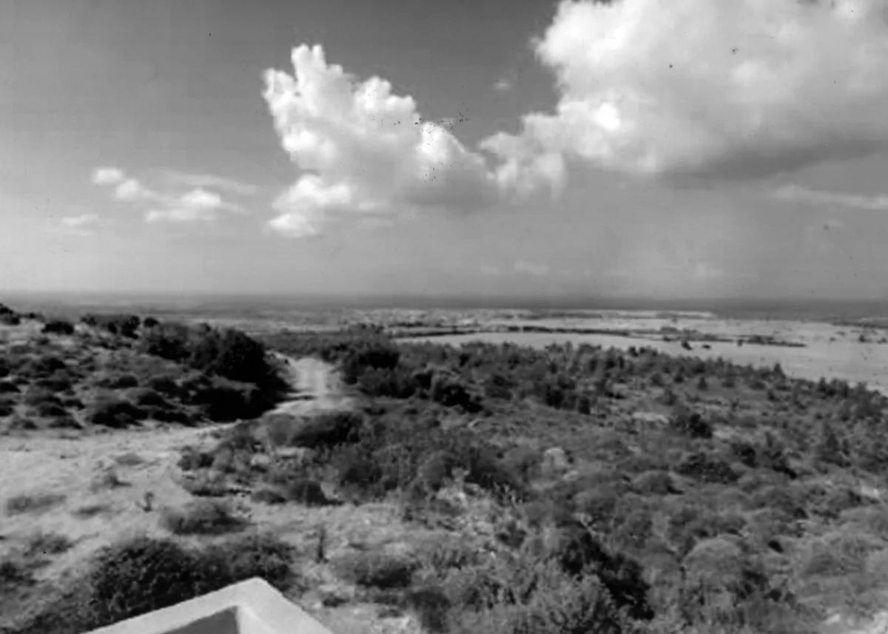
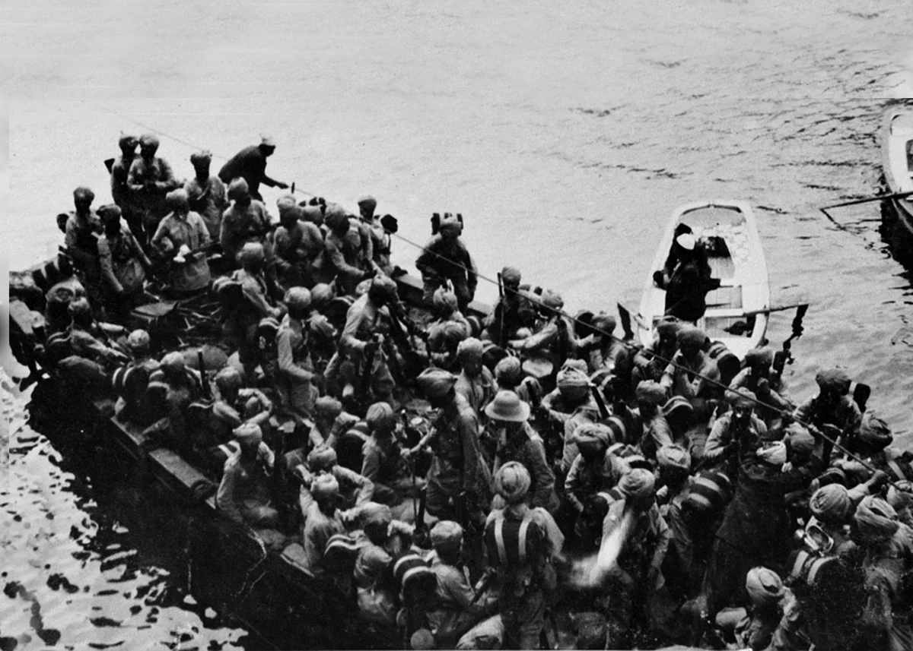
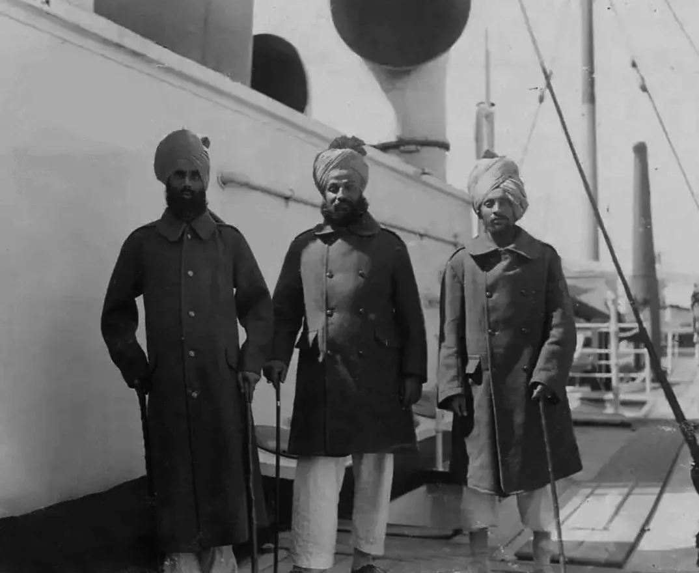
श्रेणी: बैटल गैलरी
रेजिमेंट: सिख रेजिमेंट
प्रथम विश्व युद्ध में अप्रैल 1915 से जनवरी 1916 के बीच गैलीपोली अभियान के दौरान एक संयुक्त ब्रिटिश और ओटोमन की राजधानी कॉन्स्टेंटिनोपल पर कब्ज़ा करने और समुद्र को सुरक्षित करने के लिए फ्रांसीसी ऑपरेशन शुरू किया गया था रूस के लिए मार्ग. 26 अप्रैल 1915 को, ब्रिटिश और फ्रांसीसी सेनाओं को दृढ़ संकल्प से विनाशकारी नुकसान उठाना पड़ा अपने पहले समुद्र तट पर तुर्कों द्वारा जवाबी हमले
ओटोमन साम्राज्य में गैलीपोली प्रायद्वीप के दक्षिणी सिरे पर केप हेल्स में उतरना। सामान्य भूमध्यसागरीय अभियान बल के कमांडर-इन-चीफ सर लैन हैमिल्टन ने निर्धारित किया कि ब्रिटिश और फ्रांसीसी को दो रणनीतिक अंतर्देशीय बिंदुओं, क्रिथिया गांव और ए पर कब्ज़ा करने का प्रयास करना चाहिए पड़ोसी पहाड़ी, अची बाबा, जहाँ से वे उत्तर की ओर बढ़ सकते थे। 28 को मित्र राष्ट्रों को युद्ध में भेजा गया अप्रैल 1915, जिसका तुर्की सेनाओं ने कड़ा प्रतिरोध किया। संबद्ध योजना असंगठित थी, और हमलों का नेतृत्व ख़राब ढंग से किया गया।
मित्र राष्ट्रों को भारी नुकसान हुआ और 10 घंटे के बाद हमले छोड़ने के लिए मजबूर होना पड़ा। यह इस पर था उस चरण में 14वीं सिख, 29वीं भारतीय ब्रिगेड के हिस्से के रूप में, सुदृढीकरण के रूप में मिस्र से अलग हो गया था, और 30 अप्रैल 1915 को केप हेल्स पहुंचे। XIV सिख बचकर क्रिथिया के सामने खाइयों में चले गए थे पहली रात का दुख, गीली और टूटी हुई खाइयों में, तुर्की स्नाइपर्स द्वारा हताहतों की संख्या। क्रिथिया की दूसरी लड़ाई 06-08 मई के बीच लड़ी गई, इस दौरान लगभग 600 गज की बढ़त हासिल हुई। द लड़ाई ने महान लचीलापन दिखाते हुए 9 मई से राहत मिलने तक मोर्चा बनाए रखा। 14वीं सिख को कार्य सौंपा गया 89वीं पंजाबियों को, गोरखाओं को दाहिनी ओर की इकाई, तथा 6ठीं की दो कंपनियों को भी मुक्त कर दिया गया। बहुत सक्रिय कार्रवाई न देखने के बावजूद गोरखा। लड़ाई में तीन ब्रिटिश अधिकारी और 78 सभी मारे गए रैंक, विनाशकारी तुर्की तोपखाने की गोलाबारी और छोटे हथियारों द्वारा की गई गोलीबारी के परिणामस्वरूप।
सभी ब्रिटिश हमले सामने से थे, और संभवतः अग्रिम पंक्ति को बदलने के अलावा कोई भी सफल नहीं हुआ कुछ सौ गज. फिर रात में आगे की लाइन खोदकर, उसे छोड़कर मोर्चा आगे बढ़ाया गया दिन, और अगली रात को उस पर पुनः कब्ज़ा करना। इसके कारण इनमें से कुछ आगे की पंक्तियाँ बन गईं तुर्कों द्वारा कब्ज़ा कर लिया गया था, जिसे काफी लागत पर पुनः कब्ज़ा करना पड़ा। 04 जून को बड़े पैमाने पर हमले पहले कब्जा करने और फिर तुर्की के ऊपर से गुजरने के उद्देश्य से दो लहरों में लॉन्च किया गया था लाइन. XIV सिखों (हाफ बटालियन), गोरखाओं (हाफ बटालियन) और लंकाशायर फ्यूसिलियर्स की मिश्रित सेना ब्रिगेड हमलों की पहली लहर का हिस्सा बना। हमले की योजना बहुत सावधानी से बनाई गई थी मिनट, लेकिन अंतिम परिणाम 82 प्रतिशत की कीमत पर, दुश्मन की एक भी खाई पर कब्ज़ा करना था हमले में कुल ताकत के लोग हताहत हुए। इस लड़ाई में, 14वीं सिख ने 371 अधिकारियों को खो दिया और पुरुष, मारे गए या घायल। समाना रिज की लड़ाई के बाद यह सबसे बड़ा बलिदान था। की सुबह 04 जून को तोपखाना खोला गया, लेकिन दुश्मन पर बहुत कम प्रभाव पड़ा।
दोपहर के समय, फ्यूसिलियर्स की पहली लहर आगे बढ़ी जिसे दुश्मन की गोलीबारी ने नष्ट कर दिया अग्रिम रोक दिया गया. बाईं ओर के गोरखाओं ने थोड़ी बढ़त हासिल की, लेकिन उन्हें पीछे हटने के लिए मजबूर होना पड़ा बहुत भारी मशीन गन की आग के मुख पर उनकी मूल रेखा, खड्ड के दोनों किनारों पर छिपी हुई है। दो ब्रिटिश अधिकारी मारे गए, लेकिन सिखों ने आगे बढ़कर दुश्मन की खाइयों की पहली पंक्ति पर कब्ज़ा कर लिया। हवलदार मगहर सिंह (बाद में सूबेदार मेजर और ओबीआई से सम्मानित) ने विशेष रूप से साहस दिखाया और हमले के दौरान दृढ़ संकल्प. यूनिट को बहुत भारी क्षति हुई और वह बहुत कम रह गई बहुत ही कम समय में. हमलों की दूसरी लहर, जिसमें नंबर 1 और नंबर 3 कंपनियां और शामिल हैं बटालियन मुख्यालय, 1215 बजे लॉन्च किया गया था। यह लहर दुश्मन की तीसरी पंक्ति तक चली गई 5 जून की सुबह तक वे खाइयों में फँसे रहे, जब सैनिकों को वैसे ही वापस बुलाना पड़ा घेरा जा रहा है. तब तक सीओ, मेडिकल ऑफिसर और केवल 47 जवान ही बचे थे. रेजिमेंट शिविर की सुरक्षा बढ़ई, शस्त्रागार और बूट-निर्माताओं द्वारा की जा रही थी।
अगले दो दिनों में, जीवित बचे लोगों की कुल संख्या तीन ब्रिटिश अधिकारियों और 134 वीसीओ/ तक बढ़ गई। सिपाही, 15 अधिकारियों और 574 वीसीओ/सिपाही की हमलावर ताकत से। यह सरासर वध था, लेकिन जनरल हैमिल्टन की ओर से बहुत प्रशंसा के शब्द थे। भारत के राज्य सचिव ने एक शानदार भुगतान किया हाउस ऑफ कॉमन्स में सिख बटालियन को श्रद्धांजलि। जून के अंत में एक नया आक्रमण शुरू किया गया। 14वीं सिख, जो अब कमज़ोर हो चुके थे, अभी भी 29वें डिवीजन के लिए रिजर्व के रूप में काम कर रहे थे। हालाँकि जनरल सर लैन हैमिल्टन न तो अपेक्षित जीत हासिल करने में सक्षम थे, न ही पीछे हटने में सामने से हमला करते हुए, वह सिखों के प्रति प्रशंसा से भरा हुआ था।
सारी बैर की लड़ाई, जिसे अगस्त आक्रामक के रूप में भी जाना जाता है, अंग्रेजों द्वारा किया गया अंतिम प्रयास था अगस्त 1915, ओटोमन साम्राज्य से गैलीपोली प्रायद्वीप का नियंत्रण छीनने के लिए। XIV सिखों ने भाग लिया साड़ी बैर की लड़ाई में भारतीय ब्रिगेड के हिस्से के रूप में, फील्ड मार्शल बर्डवुड की कमान संभाली मित्र देशों की सेनाएं, और बाएं आक्रमणकारी स्तंभ का हिस्सा बनीं। 14वीं सिख को उत्तरी को आवंटित किया गया था स्तंभ, 29वीं भारतीय ब्रिगेड के हिस्से के रूप में, जिसे 4थी ऑस्ट्रेलियाई ब्रिगेड के साथ मिलकर 'हिल' पर कब्ज़ा करना था क्यू' और कोजा चेमेन टेपे। युद्ध झेलने के बाद दिसंबर 1915 के अंत तक लड़ाई ख़त्म हो गई भारी संख्या में हताहत हुए (27 ब्रिटिश अधिकारी, 20 वीसीओ और 1000 पुरुष), जिसके बाद, 14वीं सिख चले गए मिस्र को. XIV सिखों ने गैलीपोली को बड़ी प्रतिष्ठा के साथ छोड़ा, और उनकी वीरता और कर्तव्य के प्रति समर्पण था 35 भारतीय विशिष्ट सेवा पदक (आईडीएसएम) के पुरस्कार से मान्यता प्राप्त।

मोबाइल पर खोलें
अपने फोन पर अंग्रेजी, हिंदी या पंजाबी में देखने के लिए इस QR कोड को स्कैन करें।